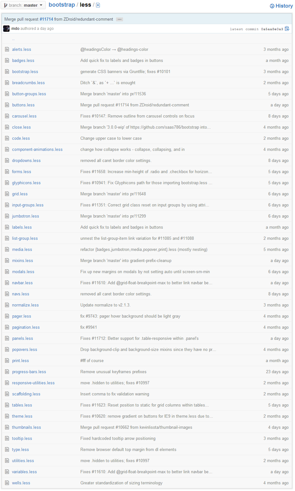

Do more with Less
Audrey Lièvremont
- Développeuse chez AIM
- jDuchess
CSS : quelques rappels
- CSS 1 : 1996
- CSS 2 : 1998
- CSS 2.1 : 2001 - 2007
- CSS 3 : 1999 - ?
- CSS4 : 2010 - ?
Cascading Stylesheet
- Structure et présentation
- Différents media
- Styles utilisateurs
CSS le mal aimé
- Compatibilité navigateur
- Copier/Coller
Préprocesser son CSS ?
- DRY
- Lisibilité
- Gain de temps
Moins de CSS
Côté client
Côté serveur
- Node JS
- Rhino
Moins de CSS
Logiciels
- Crunch (Adobe AIR)
- SimpLess
- Eclipse Plugin
Des variables
@couleur : #13BEEF;h1{
color: @couleur;
size: 2em;
}
h2{
color: @couleur;
size: 1.5em;
}Des mixins
.transition(@transition : color .2s ease-in-out){
-webkit-transition: @transition;
-moz-transition: @transition;
-o-transition: @transition;
-ms-transition: @transition;
transition: @transition;
} .transition(opacity .25s ease .1s); De l'imbrication
#titre{
font-size: 2em;
color: black;
p {
font-size: 1em;
&.colore{
color: blue;
}
}
}#titre {...}
#titre p {...}
#titre p.colore {...}Encore de l'imbrication
a{
font-size: 1.5em;
text-decoration: underline;
&:hover {
color: @couleur;
}
}Des opérations
@bordure : 1px;
.title {
border-left: @bordure;
border-right: @bordure * 3;
}@couleur : #13BEEF;
h1{
color: @couleur;
}
h2{
color: (@couleur + #003300);
}
h3{
color: desaturate(@color, 20%);
}De la modularité
@import('titres');@import('titres.less');Bootstrap

De l'héritage
Avant...
.button {
background: white;
display: block;
width: 120px;
}
.blue-button {
.button();
background: blue;
}.button {
background: white;
display: block;
width: 120px;
}
.blue-button {
display: block;
width: 120px;
background: blue;
}Après !
.button {
background: white;
display: block;
width: 120px;
}
.blue-button {
&:extend(.button);
background: blue;
}.button, .blue-button {
background: white;
display: block;
width: 120px;
}
.blue-button {
background: blue;
}Des questions ?
Références
-
http://lesscss.org/
-
http://fr.wikipedia.org/wiki/LESS_(langage)
-
http://fr.wikipedia.org/wiki/Feuilles_de_style_en_cascade
- http://www.scottlogic.com/blog/2013/03/08/extends-in-less.html